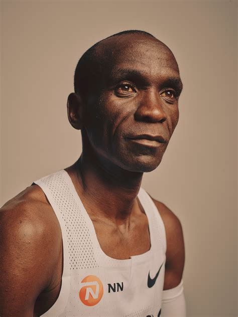

Eliud Kipchoge: Marathon legend reveals the secret behind his successful career
For the past 18 years, Kenyan long-distance runner, Eliud Kipchoge has been entertaining lovers of athletics in his home country, across Africa and around the world. Kipchoge won marathon gold at the 2016 and 2020 Olympics and set the world marathon record with a time of 2:01:39 at the 2018 Berlin Marathon. His run broke the previous world record by 1 minute and 18 seconds. Kipchoge is also the first human in history to break the two-hour barrier at an astonishing average pace of 1 kilometer in 2 minutes, 50 seconds. These achievements did not come by chance, Kipchoge told DW in an exclusive interview from his farm in Kenya.
He spoke about the love and support he has received from the team around him all these years. "Oh I'm surrounded by my coach, Patrick Sang. I'm getting all the values, I'm getting what's needed from him, as far as living is concerned," he told DW's Edith Kimani. But Kipchoge said at the center of his exploits in the sport is "trusting myself, treating myself as the best one, living an honest life," as he acknowledges his coach for instilling in him such values while growing up. Kipchoge won his first individual world championship title in 2003 when he emerged victorious in the junior race at the IAAF World Cross Country Championships and set a world junior record over 5,000 meters on the track. He started chalking up success at an early stage and continues to enjoy that even deep into his career. For Kipchoge, holding on to his integrity and giving his best at all times has paid off. "The value actually of integrity. In sports, what I mean with integrity is courage to go to the next mile," Kiphoge told DW. "Courage to face anything in your life. The value of the family, the value of self-discipline, the value of consistency. I can't live without those values, that is not Eliud."
Read More